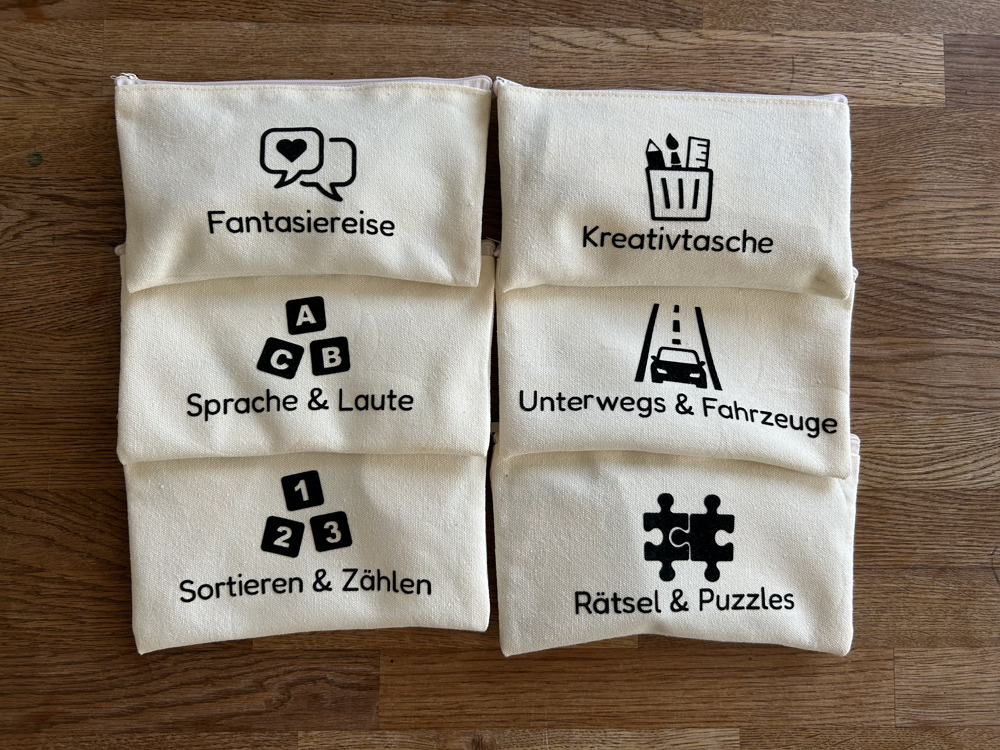
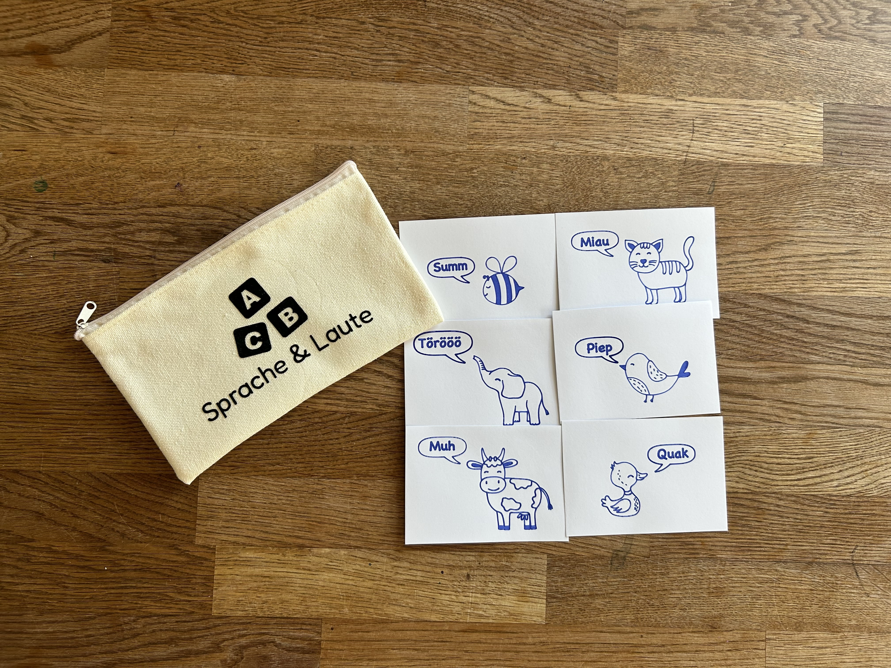
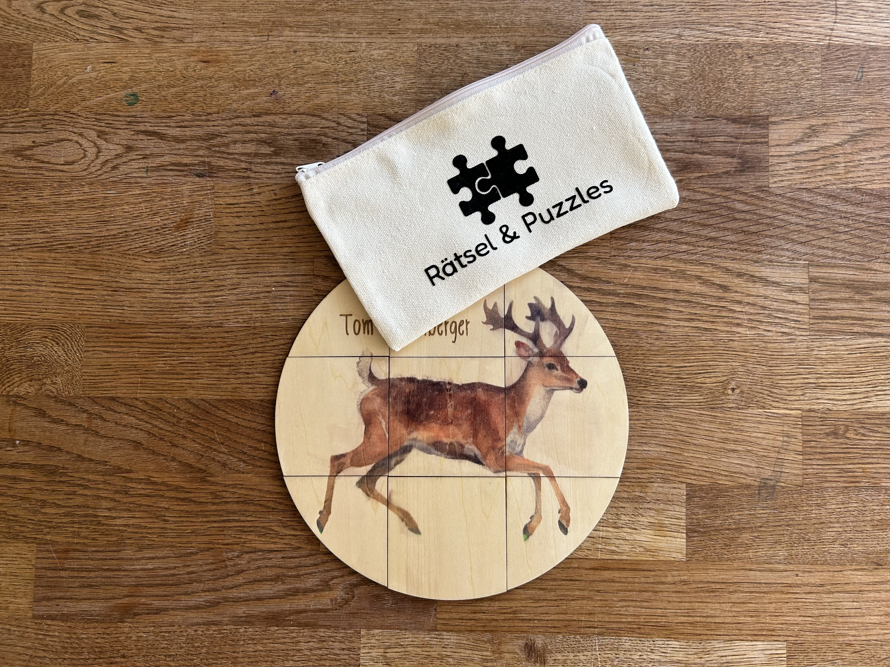
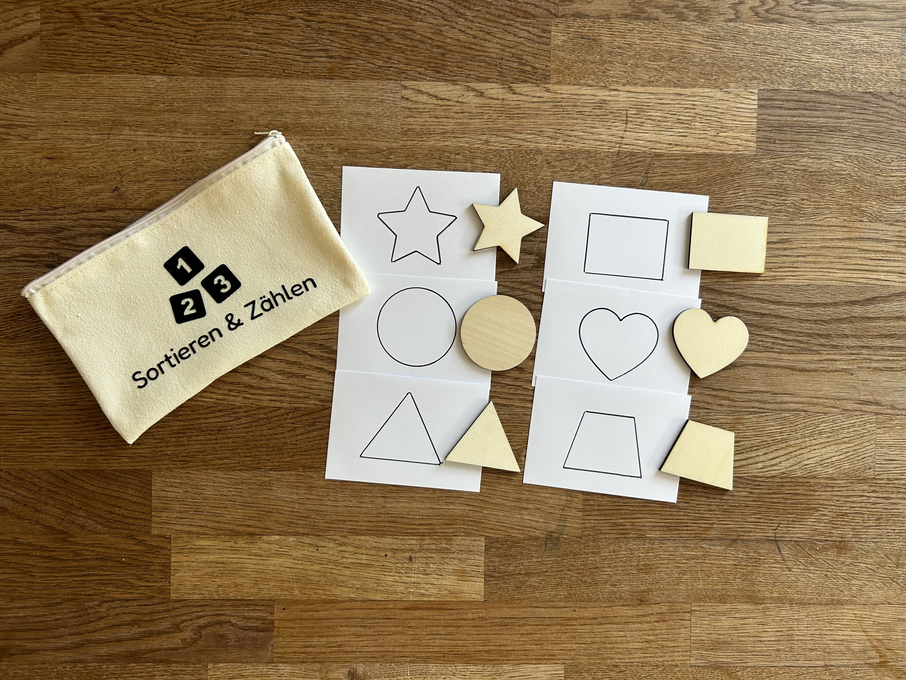
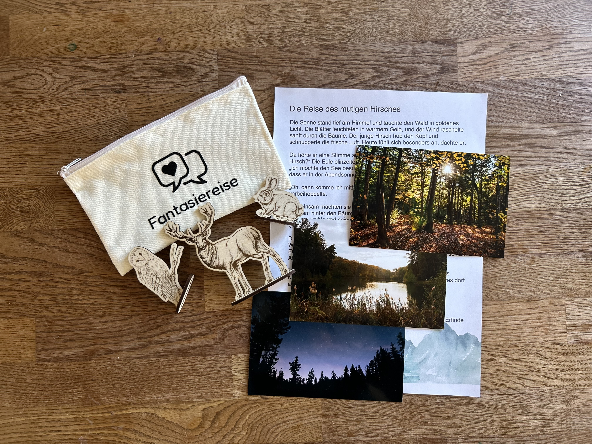
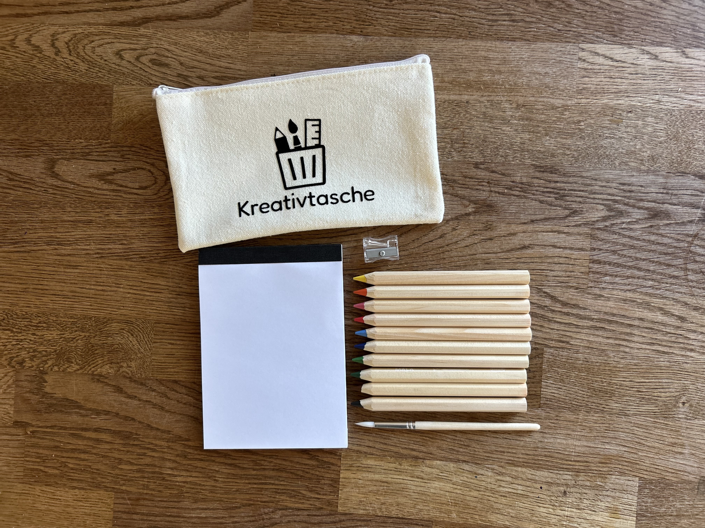
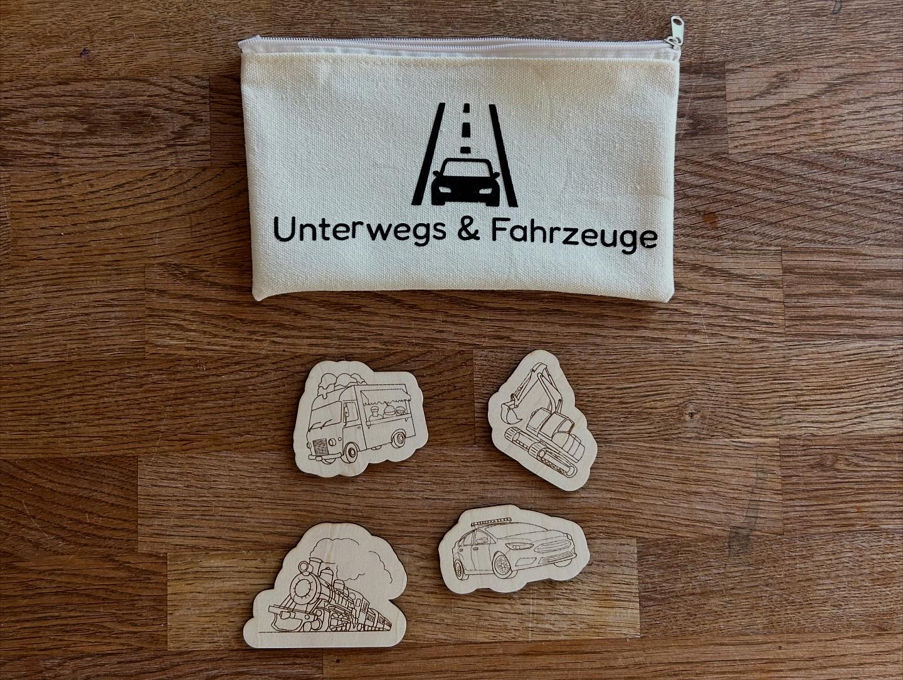

Busy Bags für unterwegs
Beschäftigung mit Herz und Köpfchen — für kleine Entdecker.








Das Projekt
Es gibt Situationen unterwegs, in denen etwas Kleines hilft — Kinder kurz aufzufangen und den Moment zu entspannen. Gerade in Wartezimmern oder beim Essen tut es gut, etwas griffbereit zu haben.
Genau dafür habe ich die Mini-Taschen entwickelt. Sie sind leicht, passen in jede Handtasche und lassen sich schnell greifen. Jede Tasche ist klar beschriftet, damit du ohne Suchen weißt, was drin ist. Kinder mögen sie, weil sich das Öffnen wie ein kleines Entdecken anfühlt — ohne Bildschirm und ohne Vorbereitung.
Du kannst sie überall nutzen: auf Reisen, bei Terminen oder zwischendurch, wenn eine ruhige Minute gut tut.
Details
Material: Stoff, Lindenholz · Technik: Plotten & Lasergravur · Anlass: Geburt, Geburtstag, Reise
Du möchtest eine personalisierte Busy Bag für ein Kind gestalten lassen?
Ähnliches Projekt anfragen →